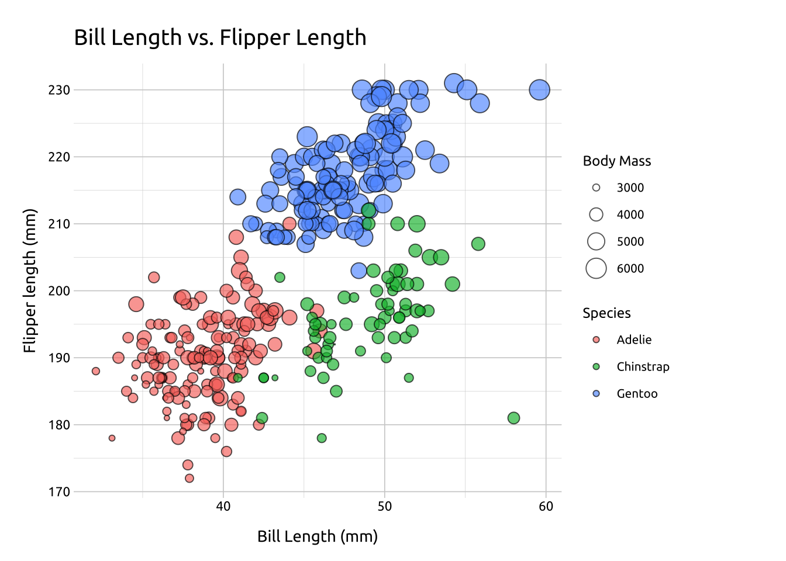
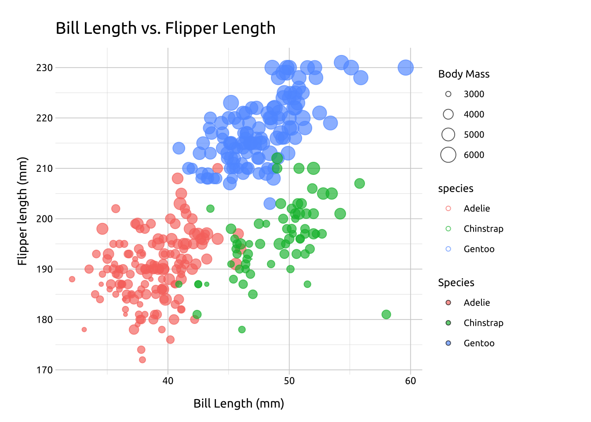

Grouped bubble graph
Description
Grouped bubble graphs use position, color, and size to display the relationships between four variables (three numerical/quantitative, one categorical).
The position on the x and y axis captures the relationship between two numerical variables. The size and color of the points display a third numerical variable across the levels of a (fourth) categorical variable.
Getting set up
PACKAGES:
Install packages.
Code
install.packages("palmerpenguins")
library(palmerpenguins)
library(ggplot2)DATA:

The penguins data
Code
penguins <- palmerpenguins::penguins
glimpse(penguins)Rows: 344
Columns: 8
$ species <fct> Adelie, Adelie, Adelie, Adelie, Adelie, Adelie, Adel…
$ island <fct> Torgersen, Torgersen, Torgersen, Torgersen, Torgerse…
$ bill_length_mm <dbl> 39.1, 39.5, 40.3, NA, 36.7, 39.3, 38.9, 39.2, 34.1, …
$ bill_depth_mm <dbl> 18.7, 17.4, 18.0, NA, 19.3, 20.6, 17.8, 19.6, 18.1, …
$ flipper_length_mm <int> 181, 186, 195, NA, 193, 190, 181, 195, 193, 190, 186…
$ body_mass_g <int> 3750, 3800, 3250, NA, 3450, 3650, 3625, 4675, 3475, …
$ sex <fct> male, female, female, NA, female, male, female, male…
$ year <int> 2007, 2007, 2007, 2007, 2007, 2007, 2007, 2007, 2007…The grammar
CODE:
Create labels with labs()
Initialize the graph with ggplot() and provide data
Map bill_length_mm to the x axis and flipper_length_mm to the y axis
Inside geom_point()
- map
body_mass_gtosizeandspeciestofill
- set the
alphato2/3
In the scale_size()
- set
rangetoc(.04, 6)
Code
labs_grp_bubble <- labs(
title = "Bill Length vs. Flipper Length",
x = "Bill Length (mm)",
y = "Flipper length (mm)",
size = "Body Mass",
fill = "Species")
ggp2_grp_bubble <- penguins |>
ggplot(aes(
x = bill_length_mm, y = flipper_length_mm)) +
geom_point(
aes(size = body_mass_g,
color = species),
alpha = 2/3) +
scale_size(range = c(.04, 6))
ggp2_grp_bubble +
labs_grp_bubbleGRAPH:

More info
We can change the shape of the points for more control of the color and fill.
SHAPE:
Inside geom_point(), we can set shape to 21, and color to "#000000" to outline the points in black
Code
ggp2_grp_bubble_s21 <- penguins |>
ggplot(aes(
x = bill_length_mm, y = flipper_length_mm)) +
geom_point(
aes(size = body_mass_g, fill = species),
alpha = 2/3, shape = 21, color = "#000000") +
scale_size(range = c(.04, 6))
ggp2_grp_bubble_s21 +
labs_grp_bubbleCOLOR:
Inside the aes() of geom_point(), we can set shape to 21, and map color to "species" to outline the points in the same colors as fill
Code
ggp2_grp_bubble_s21_color <- penguins |>
ggplot(aes(
x = bill_length_mm, y = flipper_length_mm)) +
geom_point(
aes(size = body_mass_g,
fill = species,
color = species),
alpha = 2/3, shape = 21) +
scale_size(range = c(.04, 6))
ggp2_grp_bubble_s21_color +
labs_grp_bubble